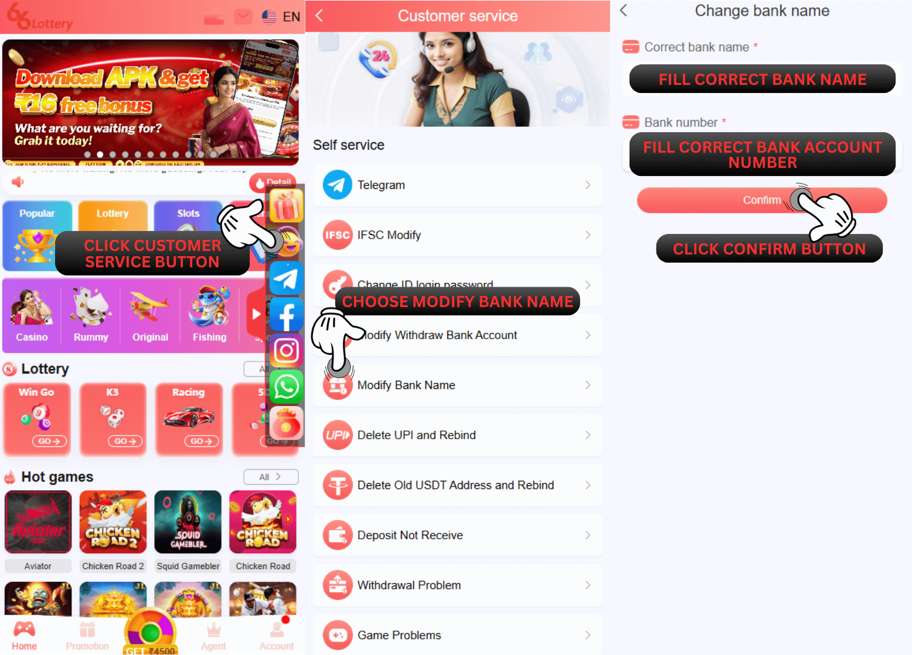

बैंक का नाम परिवर्तन
सवाल: अगर मैं सेल्फ-सर्विस सेंटर 66 लॉटरी पर बैंक का नाम बदलवाता हूं तो मेरी बैंक की जानकारी का क्या होगा?
जवाब:हमारा सिस्टम आपकी दी गई जानकारी की जांच और वेरिफिकेशन करेगा। अगर सारी जानकारी सही है, तो हमारा सिस्टम उस बैंक का नाम अपडेट कर देगा जिसे आप बदलना चाहते हैं, सही बैंक का नाम।
सवाल: मैं सेल्फ-सर्विस सेंटर 66 लॉटरी पर बैंक चेंज नेम के बारे में समस्या कैसे सबमिट कर सकता हूं?
जवाब:अब आपको इसे सेल्फ-सर्विस सेंटर 66 लॉटरी पर सबमिट करना है और सबमिट करने के लिए नीचे दिए गए गाइड को फॉलो करना है:
1.अपने 66 लॉटरी ID अकाउंट में लॉगिन करें
2.कस्टमर सर्विस बटन पर क्लिक करें
3.समस्या चुनें और बैंक का नाम बदलें चुनें
4.अपने ID अकाउंट में जो बैंक अकाउंट नंबर आपने डाला है, उसे सही से भरें
5.पासबुक बैंक / बैंक स्टेटमेंट में दिए गए सही बैंक का नाम चुनें
6.कन्फर्म बटन पर क्लिक करें

प्रश्न: बैंक का नाम बदलने के बाद मुझे क्या करना होगा?
जवाब: बैंक का नाम बदलने का काम पूरा होने के बाद, आपकी बैंक की जानकारी उस सही बैंक के नाम में बदल जाएगी जो आपने सेल्फ-सर्विस सेंटर पर सबमिट किया था।
STATUS ISSUE
सवाल: मैं सेल्फ-सर्विस सेंटर 66 लॉटरी पर बैंक चेंज नेम इश्यू का स्टेटस कैसे चेक करूं?
जवाब: आप सेल्फ-सर्विस सेंटर में सबमिट किए गए सभी ऑर्डर रिकॉर्ड का स्टेटस चेक करने के लिए "प्रोग्रेस क्वेरी" दबाकर स्टेटस इश्यू चेक कर सकते हैं।
SUCCESS STATUS
सवाल: मैं पहले से ही चेक कर रहा हूँ और यहाँ स्टेटस पहले से ही सक्सेसफुल है और एक नोट है पास - सक्सेस बैंक डेटा हटा दिया गया है, कृपया सही बैंक को रीबाइंड करें इसका क्या मतलब है?
जवाब:इसका मतलब है कि हमारा डेटा डिपार्टमेंट पहले से ही आपके बैंक डेटा अकाउंट बाउंड 66 लॉटरी अकाउंट की जांच कर रहा है और आपके बाउंड बैंक को सफलतापूर्वक डिलीट कर दिया है, इसलिए हम आपको सलाह देते हैं कि आप अपने बैंक को सही बैंक जानकारी से री-बाइंड करें।
सवाल: मैंने यहां चेक किया, सक्सेस के लिए एक और नोट है जैसे पास - सक्सेस रीसबमिट विथड्रॉ बैंक का नाम पहले से ही सही है, इसका क्या मतलब है?
A: ठीक है, हम इसे यहाँ समझाने में मदद करेंगे, कृपया नीचे दिया गया एक्सप्लेनेशन पढ़ें:
1.पास- सक्सेस "वापस जमा करें, बैंक का नाम पहले से ही सही है": इसका मतलब है कि आपके बैंक का नाम आपके 66 लॉटरी अकाउंट में IFSC कोड डेटा के समान ही जमा किया गया है और आपको फिर से नया विड्रॉल जमा करने की कोशिश करनी होगी।
2.पास- सक्सेस "बैंक का नाम सही है, IFSC मॉडिफिकेशन के लिए फिर से सबमिट करें": इसका मतलब है कि बैंक का नाम पहले से ही सही है और सिर्फ़ आपने जो IFSC कोड डाला है वह गलत है।
REJECT STATUS
सवाल: 'रिजेक्टेड बैंक नेम मॉडिफाई फेल' स्टेटस के बारे में क्या? मुझे जानना है कि 66 लॉटरी सिस्टम ने मेरे बैंक चेंज नेम इश्यू को क्यों रिजेक्ट कर दिया?
जवाब: ठीक है, बेफिक्र रहें, हम आपको यह समझाने में मदद करेंगे कि आपके अकाउंट के रिजेक्ट होने की बहुत कम संभावना है और हम नीचे इस पर एक्सप्लेनेशन देंगे:
बैंक का नाम गलत है: इसका मतलब है कि आपने जो बैंक का नाम दिया है वह गलत है। कृपया आपने जो बैंक का नाम दिया है उसे दोबारा चेक करें क्योंकि हमारा सिस्टम पहले ही चेक कर चुका है कि आपने जो बैंक का नाम दिया है वह भारत के सभी बैंकों में मौजूद नहीं है।
बैंक खाता संख्या गलत: इसका मतलब है कि आपने जो बैंक अकाउंट नंबर दिया है वह गलत है। कृपया अपना बैंक अकाउंट नंबर दोबारा चेक करें जो आपने सबमिट किया था क्योंकि हमारा सिस्टम पहले ही चेक कर चुका है कि आपका सबमिट किया गया बैंक अकाउंट नंबर आपके 66 लॉटरी अकाउंट में दिए गए बैंक अकाउंट नंबर से मैच नहीं कर रहा है।